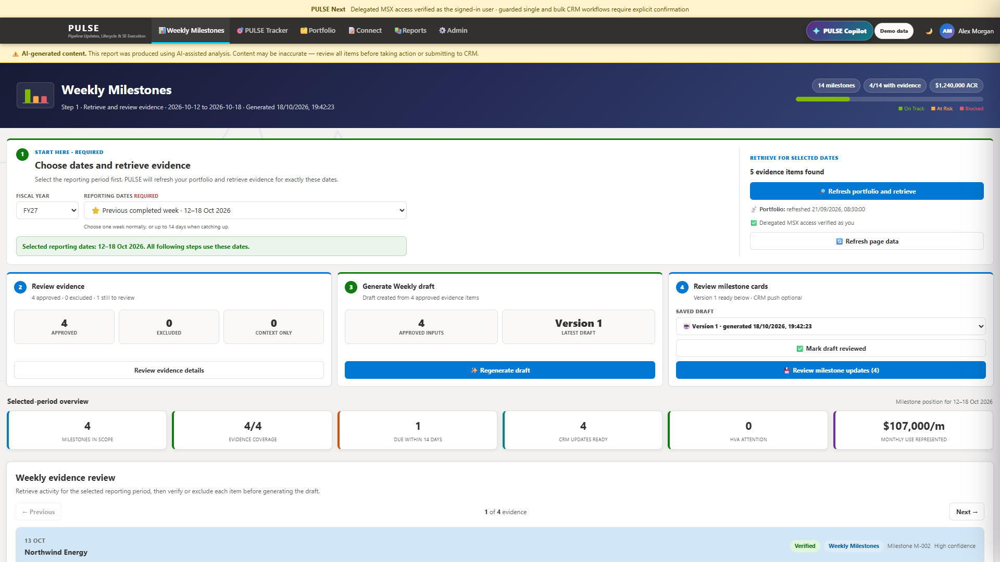
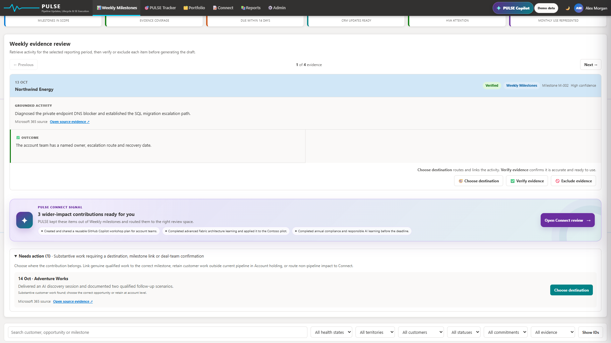
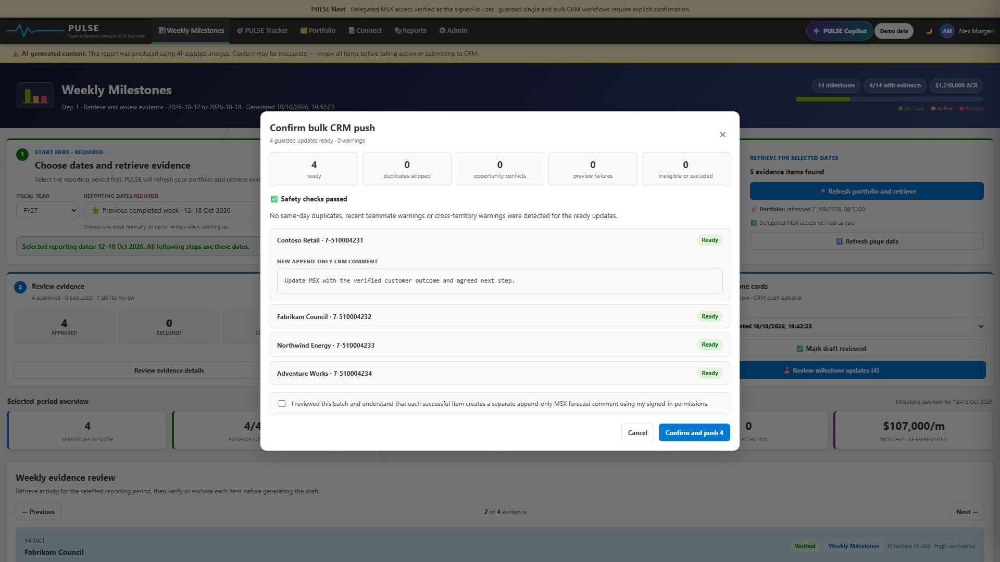
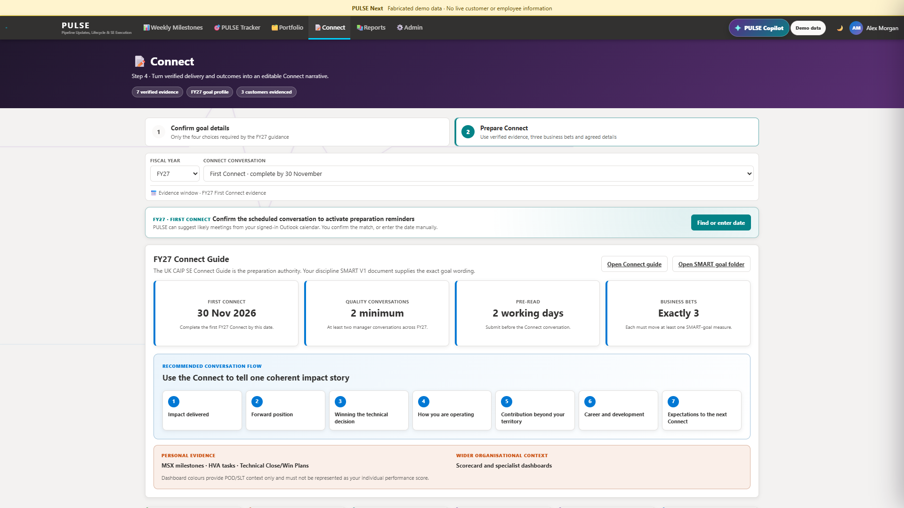
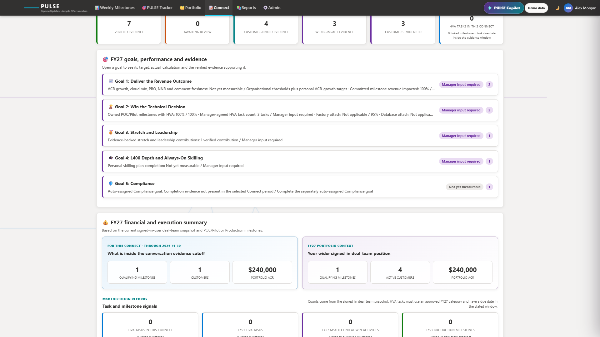
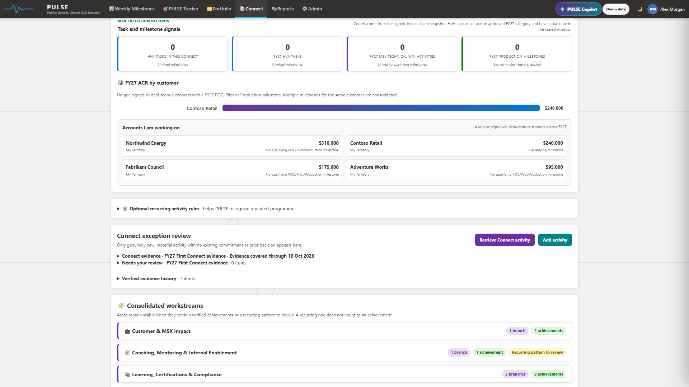

PULSE is now a Power App. There is no agent package, sideloading step or link code. Open the app, select your work account if prompted, and PULSE loads the portfolio and evidence available to the signed-in user.
If Microsoft asks you to choose an account, select your corporate work account.
Wait for the header to show your name and Systems healthy.
Confirm the banner says delegated MSX actions run as the signed-in user.
Your identity matters: reads and guarded MSX writes use your signed-in identity. PULSE does not substitute an owner identity for your own user context.
2 · Navigation and operating model
Weekly Milestones — retrieve evidence, decide where it belongs, generate a weekly draft, and preview guarded MSX updates.
PULSE Tracker — prioritise this week, review opportunities, discover whitespace, monitor execution measures and manage Technical Close readiness.
Connect — prepare the scheduled conversation, verify evidence, align it to goals and workstreams, and generate versioned Connect narratives.
Reports — revisit saved Weekly and Connect outputs.
PULSE Copilot — ask read-only questions about status, evidence gaps, blockers and next-best actions from any page.
3 · Product walkthroughs
Weekly Milestones
Evidence retrieval, milestone cards, review, editing and guarded CRM preparation.
PULSE Tracker
This Week, Opportunity Review and Opportunity Radar.
Connect
Preparation context, evidence review, generation and PULSE Copilot.
All product media uses fabricated customers and illustrative values. No live customer or employee data is published here.
4 · Weekly Milestones
Weekly is a four-step evidence workflow. It does not begin by writing commentary—it begins by proving what happened and deciding where that work belongs.

Retrieved evidence, generated draft and milestone update readiness

Verified evidence, outcome, provenance and destination

Exact append-only MSX comments and safety checks before confirmation
Step 1 — Select dates and retrieve
Select the fiscal year and a completed reporting week. Use a custom range only for catch-up and keep it within the allowed window.
Select Refresh portfolio and retrieve. PULSE refreshes the signed-in MSX snapshot and runs evidence retrieval for those exact dates.
Use the retrieval status card to see progress, coverage and any explicit diagnostic.
Step 2 — Review and route evidence
For each substantive item, choose the correct destination:
Weekly / MSX — qualified customer activity linked to a genuine opportunity and active milestone.
Account holding — real customer work where the account is known but legitimate pipeline does not yet exist.
Connect — material impact that should contribute to Connect rather than customer pipeline.
Exclude — irrelevant, passive, duplicate or incorrectly attributed activity.
No pipeline guessing: never attach evidence to a convenient but unrelated opportunity. Account holding preserves genuine customer work until the account team qualifies the correct opportunity.
Evidence classifications
Direct — customer-facing activity with direct customer participation or evidence.
Partner — work delivered with or through a partner.
Internal — internal work that materially advanced or unblocked the customer outcome.
Cross-Territory — contribution to customer work outside your aligned territory.
Unclassified — not ready for guarded MSX routing until you choose the correct classification.
Classification explains provenance; it does not automatically veto a legitimate MSX update. Every classified item still goes through explicit preview and confirmation.
Step 3 — Generate the draft
After approving evidence, generate the Weekly draft. PULSE consolidates duplicate signals, keeps supporting context beneath the material contribution, and drafts milestone progress from the verified evidence.
Step 4 — Review milestone updates
Filter by territory, customer, health, commitment and evidence source.
Review progress, decisions, blockers, next steps and evidence lineage.
Create active HVA tasks with an explicit duration (15–120 minutes, default 30).
Use the Technical Close prompt when a Stage 2 or Stage 3 opportunity requires a living plan.
Select Review milestone updates to preview the exact guarded MSX operations.
Nothing writes silently. PULSE shows the account, opportunity, milestone, comment and task operation before confirmation. Direct creation reads the task back to verify the stored duration.
5 · PULSE Tracker
Tracker is the execution workspace. It uses one evidence-led Stage 2–3 population, then shows different operational views of that same signed-in scope.
Territory lenses
My aligned territory — the accounts and opportunities aligned to your saved territory model.
Cross-territory deal team — opportunities where you contribute through deal-team membership outside the aligned patch.
This Week
The default tab turns execution gaps into a prioritised action queue:
Join missing milestone teams.
Action Factory-eligible milestones.
Own or create an appropriate POC/Pilot milestone.
Start or plan ahead for Technical Close.
Address Database or Security attach gaps.
Add HVA evidence to owned active POC/Pilot milestones.
Focus First ranks the highest-value opportunities with open actions. One opportunity can legitimately appear in several action categories.
Opportunity Review
Use this tab for structured review of active opportunities: ownership, milestone-team coverage, POC/Pilot state, HVA evidence, Technical Win coverage, attach posture and orchestration prerequisites.
Opportunity Radar
Radar helps discover or qualify work that is not yet represented correctly. It separates confirmed customer signals, qualification needs and account-level work without forcing premature pipeline creation.
Execution measures and scorecard
Milestone engagement — relevant milestone team coverage.
POC/Pilot ownership — opportunities with an active POC/Pilot you own.
High Value Activities — owned active POC/Pilot milestones with HVA evidence.
Technical Win coverage — opportunity value supported by a Technical Win plan.
Uncommitted to Committed — milestone progression with SE engagement.
Database, Security and Factory attach — each uses its stated authoritative denominator and exception rules.
The FY27 scorecard supports current-quarter, completed-quarter, year-to-date and weekly-progress views. Read the denominator on every card; PULSE deliberately avoids mixing different populations into one percentage.
Technical Close lifecycle
Plan ahead keeps Stage 2 opportunities visible before the close becomes urgent.
Start now identifies Stage 3 opportunities without a saved plan.
POC/Pilot and ownership gaps remain visible as parallel prerequisites; they do not remove an opportunity from TCP visibility.
Draft, review, sign-off and handover are separate lifecycle states. The closing HVA remains a separate MSX task.
6 · Portfolio and Opportunity Workspace
Browse parent and child account relationships without collapsing legally distinct organisations.
Open an opportunity workspace to inspect milestones, team membership, ownership and attached execution evidence.
Join eligible opportunity or milestone teams through guarded signed-in-user actions.
Review POC/Pilot ownership before taking or creating ownership.
Create the correct SE-owned POC/Pilot only when a genuine new phase of technical delivery has started.
Use explicit exception reasons and the required FY27 hashtag only when the attach is genuinely not applicable.
7 · Connect — complete workflow DETAILED
Connect is not a one-click prose generator. It is a preparation workflow that combines the scheduled conversation, verified evidence, FY27 goal measures, financial context, workstreams, learning and your agreed forward position.

Scheduled conversation, evidence window and preparation framework

Five FY27 goals with measures, calculations and supporting evidence

Verified delivery, financial context, workstreams and execution records
Conversation and evidence window
PULSE discovers the First or Next Connect conversation date and shows the pre-read deadline.
First Connect uses the FY start through the conversation date; Next Connect begins after the previous completed conversation.
Coverage is assessed only through the last completed Sunday. The open current week and future dates are not shown as missing.
Use custom dates only when you deliberately need a different evidence window.
Preparation context
The page keeps personal evidence separate from wider organisational context. Dashboard colours can inform the discussion, but must not be represented as an individual performance score.
Review the recommended conversation flow and the FY27 Connect/SMART-goal source guidance.
Confirm the required goal details and exactly three business bets.
Review the financial and execution summary, customer ACR and HVA/Technical Win records.
Needs your review
Only genuinely new, material activity appears for review. Routine attendance, preparation and repeated programme lineage remain supporting context rather than separate achievements.
Choose the contribution type.
Choose the related FY27 goal or mark it as supporting evidence only.
Choose the Connect workstream.
Verify or exclude the evidence.
The section collapses automatically when there is nothing to action. Detailed evidence lists show five items per page.
MSX attribution pending
These are genuine customer contributions held safely at account level because a valid opportunity or milestone was not available at the time of review.
Select Link MSX opportunity on the exact item.
PULSE carries that evidence record directly into the destination wizard—there is no need to remember its original week.
Choose Weekly / MSX, confirm the real account, then choose the genuine opportunity and active milestone.
If no legitimate opportunity exists, leave it in Account holding. Do not force an attribution.
Verified evidence history
Filter history by from/to date, contribution type, related goal and workstream. Use Clear filters to reset. Five results are shown per page with Previous/Next controls.
Goals, workstreams and learning
Open each FY27 goal to see its target, actual, calculation and supporting verified evidence.
Goal 2 attach evidence must have structured Factory, Database or Security proof or an explicit user confirmation.
Consolidated workstreams keep related achievements together and preserve recurring-programme lineage without inflating contribution counts.
Role/technical learning is kept separate from mandatory compliance evidence.
Generate and save
Review all evidence, goal measures and required manager inputs.
Select Generate Connect with AI.
Edit the narrative so it reflects your voice and agreed position.
Save the version. Saved Connects are private, versioned snapshots; later evidence changes do not rewrite an older saved version.
8 · Reports
Reports is the historical library for saved outputs. Use it to reopen the relevant period or version rather than regenerating an old result from today’s changed portfolio.
9 · PULSE Copilot
PULSE Copilot is read-only decision support. Ask:
What needs my attention across PULSE, and why?Which retrieved evidence still needs review or attribution?Where are TCP, HoK, CRM or ownership actions unresolved?
It explains status, evidence and next actions, but it does not replace the guarded workflow or perform an MSX write.
10 · Safety, identity and trust
Signed-in-user execution: WorkIQ retrieval and MSX writes execute as the user taking the action.
Explicit approval: guarded previews show the intended operation before any external write.
No pipeline guessing: account holding is preferred to a false opportunity attribution.
Evidence lineage: material contributions retain the underlying meeting, email or thread context.
Per-user isolation: the app loads the signed-in user’s portfolio, evidence and saved outputs.
AI review: generated content remains a draft until the user verifies it.
FAQ
Do I need the old PULSE agent package or a link code?
No. Those instructions are retired. Use the Production Power App link and your work account.
Why is customer activity in Account holding?
PULSE confirmed genuine work but could not safely link it to legitimate pipeline. Link it later when the correct opportunity exists.
Why can’t I see a milestone?
Check the account and opportunity hierarchy, active status, discipline relevance and your opportunity/milestone deal-team membership.
Will PULSE write to MSX automatically?
No. External actions require a preview and explicit confirmation and execute as the signed-in user.
Why does Connect show evidence but not count it as an attributed customer outcome?
Confirmed evidence can remain MSX-attribution pending until it is linked to a genuine opportunity and milestone.